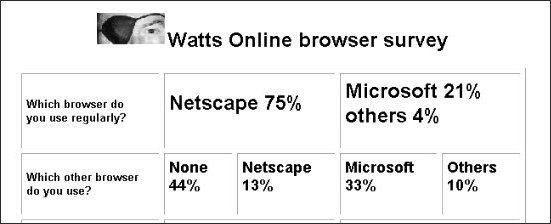

And the winner is
. . . Netscape

(click on graphic for table of results)
IT IS hard to know whether to be surprised by the results of the Watts Online browser survey. A total of 110 readers responded to
questions about their use of Web browsers.
They bucked world trends, they turned conventional wisdom on its
head, they often revealed deep passions about their software . . . most of them use
Netscape in preference to the omnipresent Microsoft Internet Explorer.
The readers who responded to the November 10 survey prefer
Netscape to Microsoft by a resounding margin of 75 per cent to 21 per cent. Five
respondents (or 4 per cent) use other products, nearly always the lightning fast Opera.
Figures from other surveys -- admittedly far bigger ones --
suggest Microsoft browser use now nearly matches Netscape. However, Watts Online readers
bucked even more trends.
The latest, most up-to-date version of Netscape (4.5) is not the
overwhelming choice. Nearly a quarter of Netscape users indicated they use the
two-year-old version 3.0. Considering not everyone gave the version number, it is likely
the 24 per cent figure is higher. Use of version 4.5 among others was about half that of
earlier version 4s.
Some version 3.0 users felt moved enough to give reasons why they
stuck with the -- in Internet terms -- old warhorse. For example: "I like it (version
3.0) -- it does 98 per cent of what I want it to. Its main problem is the heavy Java
sites. I find it simple, fast and small. I hate things with all the bells and whistles
which sound great, but I never use, and I suspect that the majority of the people don't
use either."
Microsoft browser users preferred Internet Explorer 4.0 to version
3.0 by a margin of three-to-one. One respondent had loaded the new version 5.0 beta and
was happy. From the results, it appears that Microsoft has a reasonable market
penetration. While it lagged as the main browser, it was the main choice as "other
browser", scoring 33 per cent of the vote to Netscape's 13. The biggest score was
none by 44 per cent of people.
But several people added comments to their answers, saying their
use of Microsoft was not always their choice. One wrote he used Microsoft "only
to explain to friends over the phone how to do something. Then it's straight back to
Netscape."
Another said: "Reluctantly had to load Explorer 4 to check
Web site." In fact deep dislike of Microsoft dominated respondents' comments (nearly
half of the 110 felt moved to write something in addition to answering the questions).
Fairly typical of the anti-Microsoft sentiments were these:
"After using at least three different browsers I find Netscape offers the most
features I want. Explorer is a bunch of mush so to speak. Too much frill and not enough
substance."
"I find Netscape far superior to IE especially now it is more
stable. I find Netscape is easier for navigating back and forward through long, complex
search patterns."
And: "I have all but given up on MSIE 4. It crashes regularly
after about 10 minutes, usually taking the desktop and Explorer with it."
Microsoft had its adherents as well -- "I chose MSIE4 mainly
because it is integrated in Win98 anyway, so why clutter up my hard drive with more
bloatware which does the job of what I've already got?"
Although this respondent added: "Not that I think Microsoft's
offering is better than Netscape, just that I had it anyway, and didn't need two."
One of the most revealing things in the survey was the
Net-savviness of the respondents. One hundred (or 91 per cent) of them had upgraded their
browser at some time. One even went through the chain from Netscape 1.0 back in 1994.
Another had been upgrading since starting with Lynx, the text-only Unix browser, back in
1990-91.
The respondents were not afraid to download and install off the
Net either with 73 per cent saying they had. Those who commented said they mostly upgraded
from Australian FTP sites. A number stated a preference for upgrading by using CD-Roms
from magazines.
The issue of whether Microsoft has an unfair advantage by
supplying MSIE 4.0 with new Windows PCs was impossible to resolve. The survey asked
whether a browser had been included with the PC when bought. A total of 84 per cent said
no, but as year of purchase was not queried, that result fails to show whether inclusion
of IE 4.0 (which is relatively recent) had any effect.
Just over 40 per cent said their Internet Service Providers had
supplied a browser with start-up kits, but the question failed to ask which one. Some
respondents said they had been offered a choice. Some said they made their own decisions
and used the supplied browser to download a different one.
Overall, the survey suggests the respondents are experienced users
with a great deal of loyalty to the Netscape brand.
All articles Copyright: © West Australian Newspapers |